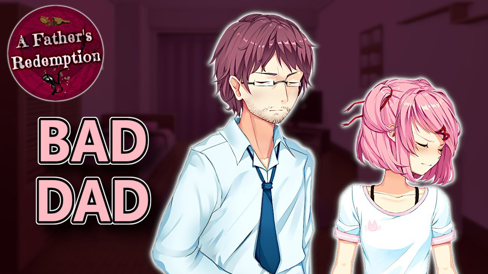

A Father Redemption
Nesta história, experimente o mundo como um homem que foi quebrado. A família dele o odeia, ele não pode sustentar a filha. Ele só quer melhorar, ele fará qualquer coisa para recuperar a confiança de sua família. AVISO: Delete o "Images.rpa" da pasta "game" se não o MOD vai bugar.
⬇ Download